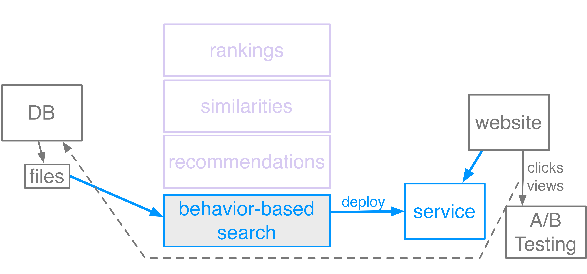
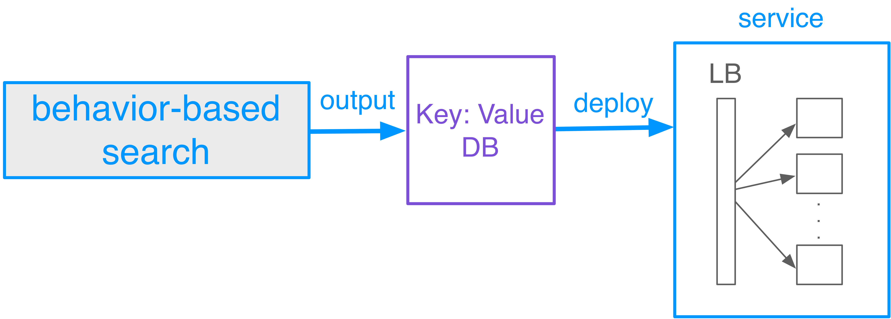

The Big Data Makeover
How things have changed over the last decade
Diana Pfeil, @dianam
How did we do Big Data?

via GIPHY
The invariant principles of big data engineering
DRY/Open it up
- make it generic
- communicate it with excellent documentation
- open it up to all
Back to the deployment process

- "machine learning": [Item1, Item2, Item3, ...]
- service.getValue()
- P13nFileBasedMappingService
via GIPHY
logos for SimpleDB, Dynamo, Cassandra, Redis
Keep It Simple
- Try the most simple approach that will work
- Modularize: do one thing well
Avoid relational databases
- administration hassle
- complexity
- performance
Measure Everything
What has Changed:
- choice
- so much literature
- so much open source
- open data
- accessibilliy of big data to all
- data ethics
Image of the future/robots
The future
- Technologies will continue to change at incredible speeds
- Devops will get easier and cheaper because serverless!
- Machine learning will still require domain expertise
- More data scientists should learn computer science fundamentals
@dianam
Source: https://c2.staticflickr.com/2/1162/1415120191_2aef20cb08_b.jpg